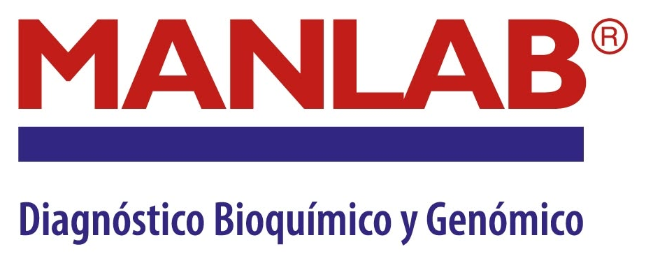

Propuesta 1 de 3 · Auditoría + Gestión de pauta
Auditoría de las cuentas publicitarias y del ecosistema digital de A. Russoniello, y gestión mensual de la pauta con foco en leads que el equipo comercial pueda cerrar.
A. Russoniello nos planteó tres necesidades distintas, con responsables y decisiones distintas. Por eso las presentamos por separado: cada una se puede aprobar, postergar o descartar sin afectar a las otras. Este documento cubre auditoría publicitaria y gestión de pauta.
Diagnóstico técnico de las cuentas y del ecosistema digital, y gestión mensual de la inversión publicitaria.
Plan de formación de 36 horas en gestión de pauta digital para el área de marketing de A. Russoniello.
Jornada de microcápsulas de contenido: 40-50 fotos y 8-10 videos en una jornada de 4 horas.
Popcorn es una agencia integral de marketing, comunicación y publicidad digital que trabaja desde una mirada de negocio. En una concesionaria eso significa una sola cosa: el número que importa no es el costo por lead, es el costo por unidad patentada.

Empezamos por el objetivo comercial —unidades vendidas, costo por venta— y desde ahí definimos las acciones.
Nunca proponemos campañas antes de entender qué está roto. Primero se mide, después se invierte.
Trabajamos con marcas industriales, automotrices y de salud: productos técnicos, caros y de decisión lenta.
Pauta, contenido, audiovisual, web y capacitación. Sin coordinar cuatro proveedores distintos.
 Bosch
Bosch Banco Galicia
Banco Galicia Libus
Libus Hospital Austral
Hospital Austral Swiss Medical
Swiss Medical
ManLab Losarc
Losarc Bolsaflex
BolsaflexAntes de la reunión revisamos cómo viene el año en patentamientos. No es un dato de color: define cuánto vale cada lead que hoy se pierde por una campaña mal configurada.
43.758 unidades en el mes, contra 62.818 el año anterior. Y 7,7% por debajo de junio.
339.359 unidades acumuladas contra 389.367 en el mismo período de 2025.
BYD ya es la 11ª marca del país (2,4% de share), BAIC 1,6% y Chery 1%, con política comercial agresiva.
Compitiendo por las mismas búsquedas, con el mismo producto y las mismas piezas de fábrica.
Por qué esto importa para la propuesta. Cuando el mercado crece, la pauta mal configurada se disimula: hay demanda de sobra. Cuando el mercado cae más del 30% interanual y hay 45 bocas de la misma marca peleando por la misma búsqueda, cada peso mal invertido y cada lead sin seguimiento se pagan caro. La eficiencia deja de ser una mejora y pasa a ser la variable competitiva.
Fuentes · ACARA / DNRPA · reportes públicos de patentamientos, julio 2026. No se utilizan datos internos de otras cuentas.
Trinidad ingresó al área hace cinco meses y ya detectó lo esencial. Este diagnóstico no lo trajimos nosotros: lo trajo ella. Nuestro trabajo es cuantificarlo, ordenarlo por prioridad y resolverlo.
Sin píxel, Meta no puede optimizar hacia conversiones: optimiza a clics o interacciones. Además se pierde el remarketing, los públicos similares y toda trazabilidad entre el anuncio y lo que pasa después. Es el hallazgo más caro de todos, porque invalida la lectura de todo lo demás.
En 22 días se invirtieron entre $400.000 y $500.000 y se generaron 42 leads: entre $9.524 y $11.905 por lead, 1,9 leads por día. Pocos calificados. Sin píxel no hay forma de saber cuántos de esos 42 valían algo.
Parte del presupuesto se está entregando a usuarios que no pueden comprar en el salón de Nordelta. El área de influencia real de la boca es Tigre, San Fernando, San Isidro, Escobar y Pilar. Cada impresión fuera de esa zona es presupuesto que no vuelve.
Los materiales de fábrica se están publicando sin adaptación a los formatos de cada ubicación. Resultado: piezas deformadas, textos cortados y menor relevancia. En subasta, menor relevancia significa literalmente pagar más por el mismo clic.
El objetivo de campaña está puesto en generar formularios, no en generar compradores. Sin criterios de calificación ni devolución del equipo comercial hacia la campaña, el algoritmo aprende a traer más de lo mismo.
Al ritmo actual, la inversión mensual en Meta ronda los $620.000. Para un producto de ticket alto, en un mercado en caída y con 45 competidores de la misma marca, es una inversión de prueba, no de competencia.
Medimos el sitio con PageSpeed Insights de Google el 7 de agosto de 2026, en su versión móvil —que es por donde llega la enorme mayoría del tráfico pago—. Este es el resultado.
Google considera “bueno” hasta 3,4 s. El sitio está 3,1 veces por encima de ese umbral: el usuario que hace clic en el anuncio espera más de diez segundos para ver la página completa.
Scripts y hojas de estilo que frenan el dibujado de la página antes de que se vea el primer contenido.
Pesan más de lo necesario y, al no declarar su tamaño, mueven el contenido mientras carga. El usuario toca donde no quería tocar.
Código que se descarga y se procesa sin cumplir ninguna función en la vista actual.
El visitante que vuelve al sitio vuelve a descargar todo de cero.
Una landing lenta no solo pierde visitas: encarece cada clic. Google evalúa la experiencia de la página de destino dentro de la calidad del anuncio, y esa calidad define la posición y el costo en la subasta. En Meta, el usuario que abandona antes de que cargue nunca dispara el evento de conversión, y el algoritmo lo interpreta como que el anuncio no funcionó. Se paga dos veces: en tráfico perdido y en costo por clic más alto.
Aclaración importante. Todas las mejoras que proponemos son de experiencia de usuario y performance técnica: velocidad, peso de imágenes, caché y código. No implican modificar la identidad visual ni la estética definida por fábrica y por la marca. El sitio se ve igual; carga distinto.
Sería fácil venir a proponer que se triplique el presupuesto. Sería un error. Escalar una cuenta sin píxel, con segmentación equivocada y con una landing de diez segundos es multiplicar el desperdicio, no los resultados. El orden correcto es este:
Entender qué está roto y cuánto cuesta cada cosa rota
Píxel, eventos, segmentación, formatos y formularios
Leer datos reales y ajustar hacia el lead que cierra
Subir inversión solo sobre lo que ya demostró rentabilidad
El objetivo no es bajar el costo por lead. Es bajar el costo por unidad vendida.
Un lead más barato que nunca compra es un lead caro. Un lead más caro que cierra en el salón es el más barato de todos. Toda la propuesta está construida sobre esa diferencia, y por eso el primer entregable no es una campaña: es un sistema de medición que permita distinguir uno del otro.
Revisión completa de las cuentas de Meta Ads y Google Ads, con acceso de administrador. Cinco dimensiones, cada una con hallazgos concretos y una recomendación accionable.
Arquitectura de campañas, conjuntos y anuncios; objetivos elegidos por campaña; solapamiento de públicos y canibalización entre campañas; distribución del presupuesto entre marca, modelo, plan de ahorro, usados y posventa; uso de pujas y presupuestos.
Revisión de la segmentación geográfica —incluida la corrección de las zonas ajenas al área de influencia, como el caso de Uruguay—, radios de cobertura por salón, edades e intereses, exclusiones, públicos personalizados y similares, y estrategia de remarketing por etapa del embudo.
Estado del píxel de Meta y de la API de Conversiones, etiquetas de Google Ads y GA4, gestor de etiquetas, eventos de conversión definidos y disparados, valores de conversión, deduplicación y trazabilidad del lead desde el anuncio hasta el CRM o la planilla comercial.
Auditoría de las piezas en circulación: adaptación a cada formato y ubicación, relación de aspecto y zonas seguras, legibilidad en móvil, jerarquía del mensaje, presencia de oferta y llamado a la acción, y cumplimiento de los lineamientos de marca de fábrica.
Análisis del formulario y sus campos, fricción y filtros de calificación, integración y velocidad de llegada del lead al equipo comercial, tiempos de primera respuesta, y definición conjunta de qué es un lead calificado para A. Russoniello.
La pauta no vive sola. Un anuncio impecable que aterriza en un sitio lento, o un lead que llega a un canal que nadie responde, no genera ventas. Auditamos todo el recorrido, no solo la campaña.
Rendimiento y velocidad —con el respaldo de PageSpeed Insights ya relevado—, experiencia móvil, claridad de la propuesta comercial, ubicación y funcionamiento de los formularios y del WhatsApp, recorrido hacia cotizador, plan de ahorro y test drive, y correcta instalación de las etiquetas de medición.
Coherencia entre lo que promete la pauta y lo que muestra el perfil, frecuencia y formatos, calidad del contenido propio frente al material de fábrica, gestión de mensajes y comentarios, y tiempos de respuesta ante una consulta comercial entrante.
Una recomendación para después de la auditoría. Todo lo que pasa una vez que el lead entra al salón —tiempo de primera respuesta, calidad de la atención, seguimiento— excede el alcance de una auditoría de pauta: es trabajo del área comercial, no del área de marketing. Por eso no lo incluimos acá. Lo que sí sugerimos es que, al cerrar este proceso, el área comercial realice un mystery shopper sobre su propia atención y sobre la de los competidores de la zona. Es la forma más directa de detectar oportunidades de mejora y diferencias competitivas reales, y complementa el diagnóstico digital desde el otro extremo del embudo.
No es un listado de observaciones. Es un documento ordenado por impacto sobre el negocio y esfuerzo de implementación, para que se sepa exactamente qué hacer primero, qué puede esperar y qué conviene descartar.
Hallazgos por dimensión con evidencia: captura, dato y consecuencia concreta.
Priorización por impacto y esfuerzo: qué mueve la aguja ya y qué es de fondo.
Recomendaciones accionables, con responsable sugerido (Popcorn, equipo interno o proveedor web).
Reunión de presentación del informe con el equipo de marketing y comercial.
La auditoría dice qué hay que hacer. La gestión mensual lo hace, todos los meses, y lo sostiene en el tiempo. Es el servicio que convierte el diagnóstico en resultados.
Objetivos del mes por línea de negocio —0km por modelo, plan de ahorro, usados y posventa—, distribución del presupuesto y calendario de campañas.
Armado y reestructuración de campañas en Meta Ads y Google Ads: objetivos, presupuestos, pujas, jerarquía y nomenclatura ordenada.
Geografía corregida por área de influencia real, públicos personalizados y similares, exclusiones y estrategia de remarketing por etapa.
Revisamos el material de fábrica y definimos qué pieza va en cada formato y ubicación. La adaptación y el diseño de las piezas se cotizan aparte, por horas de diseño, según el volumen que se necesite.
Instalación y control del píxel de Meta, eventos de conversión, API de Conversiones y etiquetas de Google. La base sobre la que se optimiza todo lo demás.
Revisión semanal de rendimiento, ajuste de presupuestos, pausado de lo que no rinde y escalado de lo que sí. Testeo de mensajes y creatividades.
Informe con lectura de negocio —no capturas de plataforma— más una reunión mensual de resultados, aprendizajes y plan del mes siguiente.
Definición de lead calificado, circuito de derivación y devolución de resultados desde el salón hacia la campaña, para que el algoritmo aprenda del cierre real.
Canal directo con el equipo de Popcorn para consultas, urgencias comerciales, lanzamientos y acciones de temporada.
Dentro del honorario mensual
Se cotiza aparte o lo aporta A. Russoniello
Sobre el diseño de piezas. El honorario mensual no cubre horas de diseño. Si hace falta producir o adaptar piezas, se cotiza aparte.
La auditoría se entrega en 15 días hábiles desde la recepción de los accesos. La gestión mensual puede arrancar en paralelo o al cierre del informe, como prefiera el equipo.
Accesos de administrador a Meta Business, Google Ads, GA4 y gestor de etiquetas. Reunión de una hora con Trinidad para entender objetivos comerciales, estacionalidad, modelos prioritarios y circuito actual del lead.
Auditoría de estructura, segmentación, tracking, creatividades y calidad de leads en ambas plataformas. Revisión del sitio y de las redes orgánicas.
Cruce de hallazgos, dimensionamiento del impacto de cada uno sobre el costo por venta y ordenamiento por impacto y esfuerzo.
Entrega del informe con diagnóstico priorizado y reunión de presentación con el equipo de marketing y comercial, con el plan de corrección acordado.
Instalación del píxel y de los eventos de conversión, corrección de la segmentación geográfica, reestructuración de campañas y adaptación de piezas a cada formato. Es el mes en que los datos empiezan a servir.
Con medición limpia se empieza a optimizar hacia lead calificado. Se depuran públicos, se testean mensajes y se define el costo por venta real de cada canal.
Con el modelo validado, se incrementa el presupuesto de medios solo en los canales, modelos y públicos que ya demostraron rentabilidad. Recién acá tiene sentido escalar.
Ningún reporte de Popcorn empieza por alcance ni por impresiones. Empieza por cuántas unidades se vendieron y cuánto costó cada una.
Inversión total dividida por las unidades atribuibles al canal digital. Es el número que decide si conviene invertir más o menos.
Qué porcentaje de los leads cumple los criterios acordados con el equipo comercial. Hoy no se puede medir; el mes 1 sí.
De lead calificado a operación cerrada. Conecta el trabajo de marketing con el desempeño del salón.
No el costo por formulario: el costo por contacto que realmente puede comprar. La métrica que reemplaza al CPL actual.
Minutos entre que entra el lead y que alguien lo contacta. En automotor, es uno de los factores que más mueve la tasa de cierre.
Porcentaje de conversiones correctamente registradas y atribuidas. Arranca cerca de cero y debe llegar a la totalidad.
Una aclaración honesta sobre los números. Durante el primer mes de gestión, algunos indicadores van a empeorar en apariencia: al dejar de contar formularios y empezar a contar leads calificados, el volumen baja y el costo por lead sube. No es un retroceso, es el momento en que los datos empiezan a decir la verdad. Lo avisamos ahora para que nadie lo lea como un mal resultado.
Nada de capturas de pantalla de la plataforma. Un documento que explica qué pasó, por qué pasó y qué se hace el mes que viene.
Valores expresados en pesos argentinos, sin IVA. El impuesto se adiciona en la factura según la condición fiscal vigente.
Todos los valores se expresan sin IVA · la facturación se realiza en pesos argentinos
Todo lo que sigue es presupuesto de medios, no honorario de Popcorn. Es la pauta que se paga directamente a Meta y a Google. A. Russoniello la define y la abona en forma directa; Popcorn la planifica, la ejecuta y la reporta. Lo incluimos completo, con supuestos y fuentes a la vista, para que se pueda auditar cada número.
| Parámetro | Valor | Unidad | Fuente |
|---|---|---|---|
| Tipo de cambio | 1.500 | ARS / USD | Dólar oficial BNA, 10-ago-2026 (compra $1.470 / venta $1.520) |
| Objetivo de ventas mensuales | 45 | unidades | Definido por el cliente en reunión exploratoria |
| Patentamientos Jeep — promedio mensual nacional | 1.500 | unidades | ACARA, informes mensuales 2026 |
| Concesionarios oficiales de la red | 45 | bocas | Estimación propia — a confirmar |
| Promedio estimado por concesionario | 33,3 | unidades | Cálculo: patentamientos ÷ bocas de la red |
| Objetivo vs. promedio de red | +35% | — | Sanity check del objetivo comercial |
El objetivo de 45 unidades está 35% por encima del promedio de una boca de la red. Es alcanzable, pero exige un plan, no una campaña.
Es la variable que define todo el modelo. Trabajamos con tres tasas, cada una con su origen declarado.
| Escenario de cierre | Tasa | Fuente |
|---|---|---|
| Conservador | 2,2% | Concesionaria multimarca de marcas europeas, 2026 — base histórica Popcorn (anonimizada) |
| Base | 3,8% | Marca importada en etapa de instalación, 2026 — base histórica Popcorn (anonimizada) |
| Optimista | 6,0% | Proyección propia sin respaldo empírico directo — asume demanda de marca preexistente y proceso comercial optimizado |
Una advertencia que preferimos hacer nosotros. El 8%-10% de cierre que se maneja habitualmente en el sector no está respaldado por ninguna referencia 2026 disponible. Puede ser válido medido sobre leads calificados, no sobre el volumen total de leads digitales. Planificar sobre esa cifra es la forma más rápida de que un plan de medios no cierre. Por eso este modelo se apoya en tasas medidas, no en el número que suena mejor.
Cada plataforma cumple un rol distinto y cuesta distinto. Estos son los valores con los que dimensionamos.
| Plataforma / objetivo | CPL (USD) | CPL (ARS) | Criterio |
|---|---|---|---|
| Meta — Prospecting | USD 7 | $10.500 | Referencia 2026 del sector (~USD 5,7) + premium de marca Jeep |
| Meta — Remarketing | USD 4 | $6.000 | Menor CPL del mix; audiencia ya impactada |
| Google — Performance Max | USD 14 | $21.000 | Referencia 2026 del sector (~USD 12,8) + premium de marca Jeep |
| Google — Search | USD 20 | $30.000 | Referencia 2026 (~USD 31,5) ajustada a la baja: Jeep tiene demanda de búsqueda de marca propia |
El premium de marca Jeep se estimó en 1,3x el promedio de cartera a nivel total y 1,8x-1,9x en búsqueda pagada. Fuente: base histórica Popcorn sobre cuentas multimarca del sector automotriz argentino (anonimizada).
No son tres presupuestos sueltos: son tres momentos del mismo plan. Cada escenario corresponde a una fase, y se pasa a la siguiente cuando la anterior demostró lo que tenía que demostrar.
Elegí un escenario · queda incluido en el correo de aprobación como intención de inversión
Validar tracking, calidad de lead y ángulos creativos. Es la fase que mide la tasa de cierre real.
Escalar lo validado e incorporar Performance Max con señales de conversión ya cargadas.
Dimensionado para sostener el objetivo de 45 unidades bajo la tasa de cierre base.
| Plataforma | Inversión (USD) | CPL (USD) | Leads estimados | Inversión (ARS) |
|---|---|---|---|---|
| Meta — Prospecting | USD 1.500 | USD 7 | 214,3 | $2.250.000 |
| Meta — Remarketing | USD 400 | USD 4 | 100,0 | $600.000 |
| Google — Search | USD 1.200 | USD 20 | 60,0 | $1.800.000 |
| Google — Performance Max | USD 500 | USD 14 | 35,7 | $750.000 |
| Total / CPL blended | USD 3.600 | USD 8,78 | 410,0 | $5.400.000 |
| Plataforma | Inversión (USD) | CPL (USD) | Leads estimados | Inversión (ARS) |
|---|---|---|---|---|
| Meta — Prospecting | USD 2.800 | USD 7 | 400,0 | $4.200.000 |
| Meta — Remarketing | USD 700 | USD 4 | 175,0 | $1.050.000 |
| Google — Search | USD 2.200 | USD 20 | 110,0 | $3.300.000 |
| Google — Performance Max | USD 1.000 | USD 14 | 71,4 | $1.500.000 |
| Total / CPL blended | USD 6.700 | USD 8,86 | 756,4 | $10.050.000 |
| Plataforma | Inversión (USD) | CPL (USD) | Leads estimados | Inversión (ARS) |
|---|---|---|---|---|
| Meta — Prospecting | USD 4.400 | USD 7 | 628,6 | $6.600.000 |
| Meta — Remarketing | USD 1.100 | USD 4 | 275,0 | $1.650.000 |
| Google — Search | USD 3.400 | USD 20 | 170,0 | $5.100.000 |
| Google — Performance Max | USD 1.800 | USD 14 | 128,6 | $2.700.000 |
| Total / CPL blended | USD 10.700 | USD 8,90 | 1.202,1 | $16.050.000 |
Por qué el CPL blended casi no se mueve al escalar. Entre el Escenario A y el C la inversión se multiplica por tres, y el costo por lead promedio pasa de USD 8,78 a USD 8,90: apenas un 1,4% más. Eso pasa porque el mix entre plataformas se mantiene equilibrado y el remarketing —el canal más barato— crece en la misma proporción. Escalar no encarece el lead si la estructura está bien armada.
Cruzamos cada escenario de inversión con cada tasa de cierre posible. Esta matriz es la que responde la única pregunta que importa: cuánto hay que invertir para llegar a 45 unidades por mes.
| Escenario | Inversión (USD) | Leads / mes | Cierre conservador · 2,2% | Cierre base · 3,8% | Cierre optimista · 6,0% |
|---|---|---|---|---|---|
| A — Validación | USD 3.600 | 410,0 | 9,02 | 15,58 | 24,60 |
| B — Crecimiento | USD 6.700 | 756,4 | 16,64 | 28,74 | 45,39 |
| C — Escala | USD 10.700 | 1.202,1 | 26,45 | 45,68 | 72,13 |
| Objetivo comercial | — | 45 ventas / mes | — | — | — |
Resaltadas, las dos únicas combinaciones que alcanzan el objetivo de 45 unidades mensuales
| Escenario | Inversión (USD) | Cierre conservador · 2,2% | Cierre base · 3,8% | Cierre optimista · 6,0% |
|---|---|---|---|---|
| A — Validación | USD 3.600 | USD 399,11 | USD 231,07 | USD 146,34 |
| B — Crecimiento | USD 6.700 | USD 402,61 | USD 233,09 | USD 147,62 |
| C — Escala | USD 10.700 | USD 404,58 | USD 234,23 | USD 148,35 |
El número que pone todo en perspectiva. Ticket de referencia: Jeep Compass, USD 40.000 — precio de lista desde $60.060.000 ARS, según lista oficial de la marca, jul-ago 2026.
| Escenario | Cierre conservador · 2,2% | Cierre base · 3,8% | Cierre optimista · 6,0% |
|---|---|---|---|
| A — Validación | 1,00% | 0,58% | 0,37% |
| B — Crecimiento | 1,01% | 0,58% | 0,37% |
| C — Escala | 1,01% | 0,59% | 0,37% |
Incluso en el peor escenario de cierre, adquirir un cliente cuesta alrededor del 1% del valor de la unidad
Hay dos caminos al objetivo. Cuál corresponde no se decide: se mide.
Los dos caminos a las 45 unidades son el Escenario B con cierre optimista y el Escenario C con cierre base. Cuál aplica depende de la tasa de cierre real, que solo se conoce midiendo durante la fase de validación. La diferencia entre ambos supera los USD 4.000 mensuales. Ese es, literalmente, el valor de medir antes de escalar.
Ningún supuesto de este plan es una opinión. Estas son las referencias de mercado que lo sostienen, con su fuente declarada.
| Período | Perfil del anunciante | CPL Meta (ARS) | CPL Google (ARS) | Fuente |
|---|---|---|---|---|
| Julio 2022 | Grupo multimarca, 6 marcas + usados | ~$1.100 | ~$630 | Base histórica Popcorn (anonimizada) |
| Agosto 2023 | Concesionaria oficial, marca tradicional | s/d | ~$3.300 - $3.600 | Base histórica Popcorn (anonimizada) |
| Julio 2026 | Marca en instalación, segmento SUV C | ~$8.500 | ~$19.000 - $27.800 | Base histórica Popcorn (anonimizada) |
La eficiencia se corrió de Google hacia Meta. Expresado en dólares al tipo de cambio oficial de cada período, el CPL de búsqueda pagada se multiplicó por 3 a 4 veces entre 2022 y 2026. El CPL de Meta, en cambio, se mantuvo estable e incluso mejoró. Es la razón por la que este plan carga el grueso de la inversión en Meta y usa Google para capturar intención, no para generar volumen.
Variación de enero a julio, sobre una cuenta multimarca del sector con serie mensual completa:
Implicancia: un presupuesto fijo compra progresivamente menos leads a lo largo del año. Todo objetivo anual requiere incrementos escalonados.
Índice de CPA de Jeep contra el promedio de cartera, en cuentas multimarca que gestionaban Jeep junto a otras marcas:
Implicancia: un concesionario Jeep/RAM puro no debe planificar sobre el CPL promedio del mercado automotriz. Este plan ya lo contempla.
| Período | Unidades patentadas | Variación interanual | Fuente |
|---|---|---|---|
| Marzo 2026 | 48.972 | +1,2% | ACARA, informes mensuales 2026 |
| Junio 2026 | 45.995 | -12,8% | ACARA, informes mensuales 2026 |
| Julio 2026 | 43.758 | -30,3% | ACARA, informes mensuales 2026 |
| Acumulado 7 meses | 339.359 | -12,8% | ACARA, informes mensuales 2026 |
Aprendizajes operativos de campañas reales del sector automotriz argentino. Son la diferencia entre arrancar de cero y arrancar sabiendo dónde están los pozos.
Las piezas que comunican precio o cuota desde el primer segundo generan leads a menos del 50% del costo. No es una cuestión estética: es la variable creativa que más mueve el CPL.
Las piezas de producción mínima generan leads a aproximadamente un tercio del costo del material producido de fábrica. Es el argumento más fuerte para tener contenido propio filmado en el salón.
Restringir la pauta de Meta a un recorte provincial casi duplicó el CPL. Conclusión operativa concreta para esta cuenta: no restringir a Zona Norte. El algoritmo necesita aire para encontrar al comprador.
Una falla de configuración del sitio dejó campañas de búsqueda sin entregar durante casi un mes, con el 54% del presupuesto ya ejecutado. Es exactamente el riesgo que la Fase 0 de auditoría existe para evitar.
El CPL mejora alrededor de un 30% entre el primer y el segundo mes de operación, y hasta un 60% en las piezas de mejor rendimiento. Hay que aguantar el primer mes sin cambiar el rumbo.
Todas las referencias de costo publicitario provienen de campañas del sector automotriz argentino y se presentan de forma agregada y anonimizada, en cumplimiento de los acuerdos de confidencialidad correspondientes. Son referencias orientativas y no constituyen garantía de resultados.
La inversión en medios no arranca el día uno. Arranca cuando la base técnica está sana.
| Fase | Período | Inversión mensual (USD) | Inversión mensual (ARS) | Foco |
|---|---|---|---|---|
| Fase 0 — Auditoría | Semanas 1-3 | Sin inversión en medios | — | Tracking, formularios y validación de campos, verificación del anunciante, estructura de cuentas, unificación de marca en redes. |
| Fase 1 — Validación | Meses 1-2 | USD 3.600 | $5.400.000 | Medir tasa de cierre real, validar ángulos creativos, establecer línea de base de CPL. |
| Fase 2 — Crecimiento | Meses 3-4 | USD 6.700 | $10.050.000 | Escalar lo que funcionó, incorporar Performance Max. |
| Fase 3 — Escala | Mes 5 en adelante | USD 10.700 | $16.050.000 | Sostener el objetivo comercial. El nivel definitivo depende de la tasa de cierre medida en la Fase 1. |
| Métrica | Frecuencia | Por qué importa |
|---|---|---|
| Costo por lead, por plataforma y campaña | Semanal | Detección temprana de desvíos |
| Tasa de cierre lead → venta | Mensual | Es la variable que define todo el modelo |
| Costo por venta | Mensual | Métrica de negocio, no de plataforma |
| Calidad de lead (contactabilidad, agendamiento) | Semanal | Distingue volumen de valor |
| Impression share en búsquedas de marca | Mensual | Mide la pérdida frente a otros concesionarios de la red |
| Participación por sucursal | Mensual | Valida la asignación entre Junín y Nordelta |
Requisito indispensable. El seguimiento de la tasa de cierre exige que A. Russoniello informe las ventas atribuibles a leads digitales. Sin ese retorno de información, el plan sólo puede optimizar hacia volumen de leads, que es una métrica inferior a la venta. No es un pedido administrativo: es la condición para que todo el modelo funcione.
Mitigación: Fase 0 de auditoría antes de cualquier inversión en medios.
Mitigación: validación de campos y verificación en la Fase 0.
Mitigación: trabajo conjunto con el cliente en paralelo a la Fase 1.
Mitigación: revisión trimestral de escenarios.
Mitigación: ajuste mensual del presupuesto en pesos.
Este plan está construido sobre una planilla de cálculo vinculada: al cambiar un supuesto, se recalculan escenarios y sensibilidad. Se entrega junto a la propuesta para que A. Russoniello pueda auditarlo y correr sus propios escenarios.
Sin letra chica ni sorpresas al momento de facturar.
Los valores de esta propuesta rigen hasta el 21 de agosto de 2026. Pasada esa fecha se revisan por variación de costos.
Dos opciones: 100% anticipado, con valor preferencial; o 50% al inicio y 50% al finalizar el proyecto o a los 30 días de iniciado, lo que ocurra primero.
La gestión mensual se factura íntegramente por adelantado, al inicio de cada período mensual. No aplica el valor preferencial por anticipado. Al honorario fijo se adiciona un 15% variable sobre la inversión ejecutada en plataformas, que se liquida junto con el cierre de cada mes.
Todos los montos de esta propuesta se expresan sin IVA. El impuesto se adiciona en la factura según la condición fiscal vigente.
La inversión publicitaria en Meta y Google la define y la abona A. Russoniello directamente a las plataformas. Popcorn no la factura ni la intermedia.
La gestión mensual se contrata por un período de seis meses, el plazo necesario para corregir la medición, validar el modelo y mostrar resultados sobre datos limpios. Los honorarios se revisan trimestralmente por variación de costos.
A. Russoniello provee accesos a Meta Business, Google Ads, GA4, gestor de etiquetas y sitio web. Los plazos empiezan a correr desde la recepción de los accesos.
Esta propuesta es de uso exclusivo de A. Russoniello. No se comparten con terceros los datos de la cuenta ni los hallazgos de la auditoría.
Empezamos por entender exactamente qué está fallando y cuánto cuesta. Desde ahí, cada peso que se invierta va a poder defenderse con un número.
Confirmás la propuesta y la forma de pago desde el botón de abajo.
Nos das acceso de administrador a las cuentas y coordinamos el kick-off.
15 días hábiles de trabajo y entrega del informe priorizado.
Arranca la gestión mensual y se corrige la base de medición.